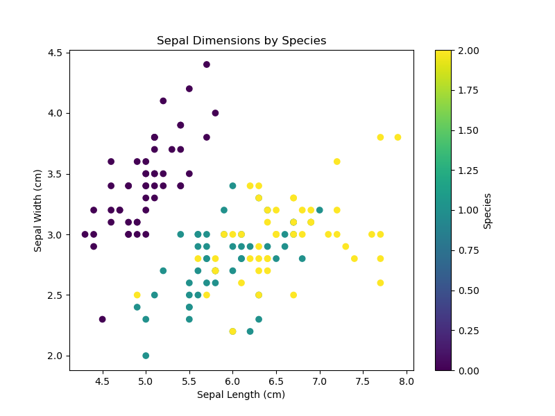
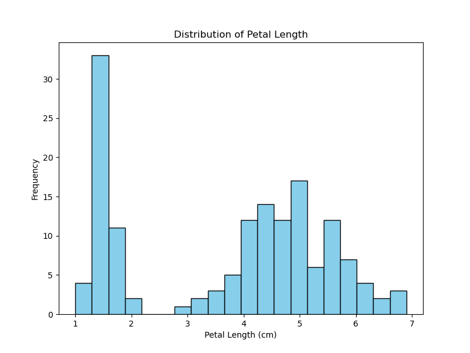
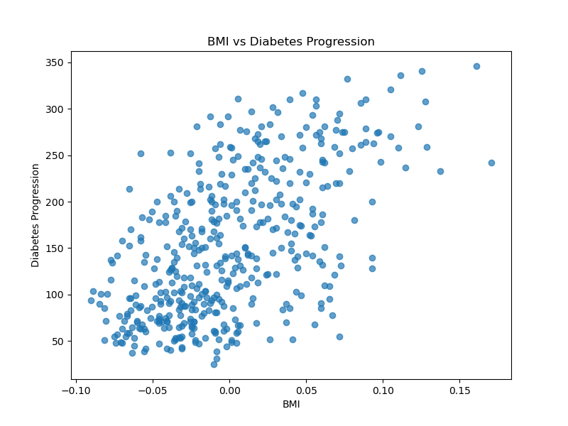
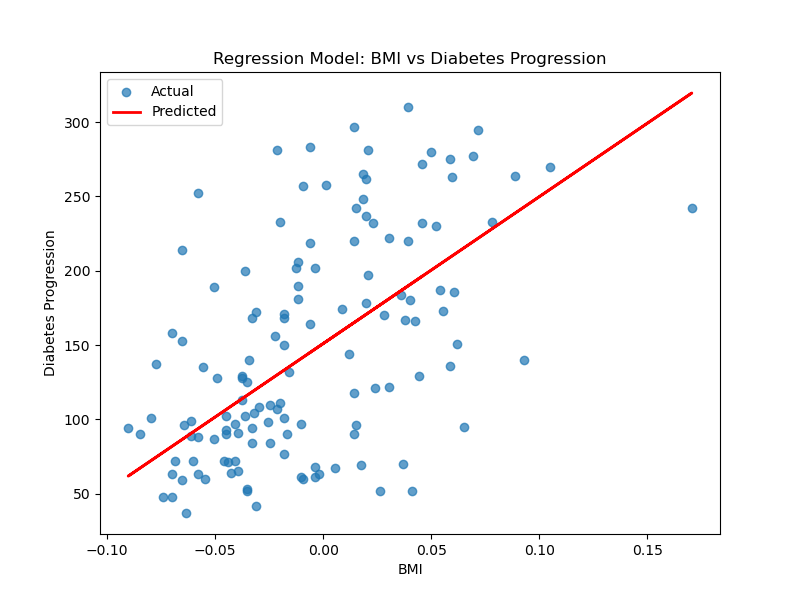

Introduction
This project demonstrates data storytelling using Python's toy datasets.
We aim to bridge descriptive and predictive analytics for better insights.
Visualizations
Descriptive Visualizations
  Model-Based Visualization
Conclusion
Through visualizations and modeling, this project highlights trends in the Iris and Diabetes datasets.